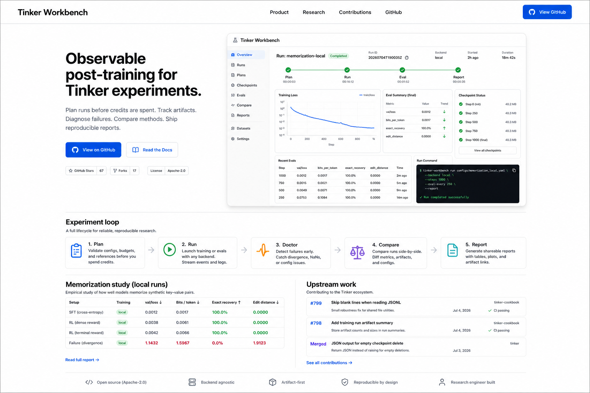

Observable post-training for Tinker experiments.
Plan runs before credits are spent. Track artifacts. Diagnose failures. Compare methods. Ship reproducible reports.
- 82
- passing tests
- 3
- training backends
- 1.0000
- bits recovered
memorization-local
completed
$
tinker-workbench run configs/memorization_local.yaml
loss curve
step 0 -> 199
step
bits
exact
49
0.7031
0.0000
99
0.9844
0.9375
149
1.0000
1.0000
Regression testing for post-training recipes.
Workbench does more than record a successful run. It saves known-good behavior, reruns it later, and flags silent drift before a recipe becomes misleading.
Store config fingerprints, loss curves, eval scores, and token usage as the reference.
Compare reruns against the baseline for loss shape, eval regressions, and cost drift.
Detect NaNs, divergence, stalls, checkpoint gaps, budget overruns, and eval drops.
Probe tokenization and chat rendering before distillation silently trains on mismatched inputs.
One loop for the whole experiment.
Workbench turns a training run into a sequence of inspectable artifacts, so researchers can debug results after the job finishes without rerunning it.
-
01
Plan
Estimate tokens, checkpoints, storage, cost, and risky settings before launch.
-
02
Run
Record configs, metrics, events, evals, checkpoints, and summaries.
-
03
Doctor
Catch NaNs, divergence, stalls, missing checkpoints, and eval regressions.
-
04
Compare
Rank SFT and RL-style arms by loss, exact match, and bits recovered.
-
05
Report
Generate a markdown experiment report with reproduction commands.
A real memorization study, not just a mock dashboard.
The local backend trains a tiny neural LM with Adam, writes real NumPy checkpoints, and exposes genuine loss and eval dynamics before any Tinker credits are spent.
Open generated experiment report| Arm | Backend | Steps | Final loss | Bits | Exact |
|---|---|---|---|---|---|
| Local SFT | local | 200/200 | 0.0026 | 1.0000 | 1.0000 |
| Mock SFT | mock | 40/40 | 0.3819 | 0.9812 | 0.8438 |
| Dense reward RL | mock | 40/40 | 0.7330 | 0.9281 | 0.5000 |
| Terminal reward RL | mock | 40/40 | 1.2702 | 0.8719 | 0.2812 |
Built in public, near the Tinker ecosystem.
The project is paired with small upstream contributions, so the workbench grows from real API, recipe, and reliability surfaces.
tinker-cookbook #798
Add training run artifact summary
CI green, review required
tinker-cookbook #799
Skip blank lines when reading JSONL
CI green, review required
tinker #48
Return JSON for empty checkpoint deletes
Open and clean
batch_invariant_ops #25
Correct Python version metadata
Open and clean
Launch-ready artifact trail.
The static site is backed by the same repository artifacts: configs, run summaries, reports, tests, and public PR links. The story is not "trust the demo"; it is "inspect the trail."
